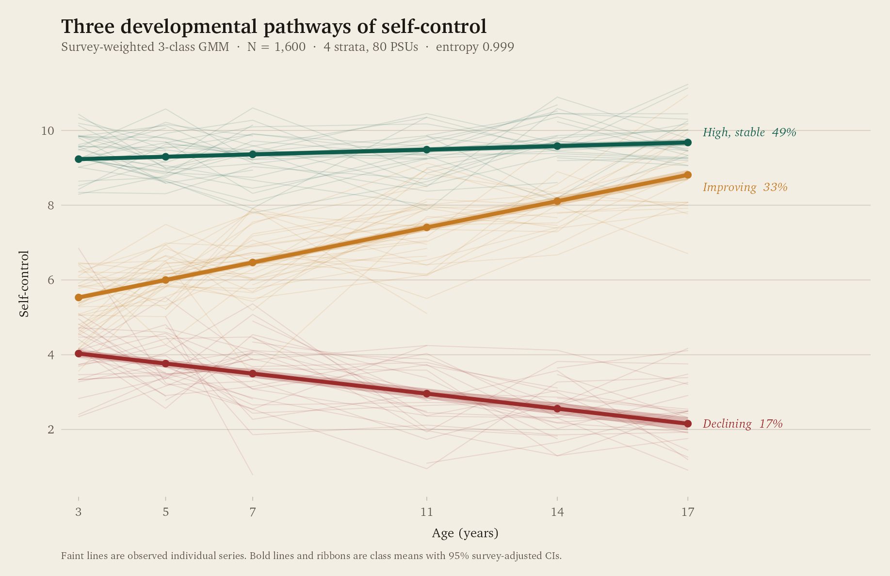

surveymixr
The sample is complex.The trajectories still resolve.
Growth mixture models used to need Mplus when the data came from a
stratified, clustered, weighted survey. Here it is in twenty lines of R:
one model, three latent pathways, survey-adjusted inference.
R · gmm_survey()
Copy
1 library (surveymixr)2 3 # Self-control, ages 3–17, survey design 4 fit <- gmm_survey ( 5 data = selfcontrol, 6 id = "id" , 7 time = "age" , 8 outcome = "selfcontrol" , 9 n_classes = 3 , 10 strata = "stratum" , 11 cluster = "cluster" , 12 weights = "weight" 13 ) 14 15 plot_trajectories (16 fit, 17 xlab = "Age (years)" , 18 ylab = "Self-control" , 19 colors = c ("#0F5C4C" , "#C47A22" , "#9B2C2C" ) 20 )

Sample
1,600children, 6 waves
Survey design
4 × 80strata × PSUs, with weights
Entropy
0.999classes are sharply separated
Weighted shares
49 / 33 / 17high · improving · declining
High, stable. Starts high at age 3 and stays there — the modal pathway.Improving. A lower start, then a steady climb that nearly meets the high class by 17.Declining. The smallest class, and the only one whose mean falls across childhood.
Figure from a fitted surveymixr model. Individual series are sampled for the web figure; bold lines and ribbons are class means with 95% survey-adjusted CIs. Data are simulated with the package generator, MCS-inspired.
github.com/siyangni/surveymixr